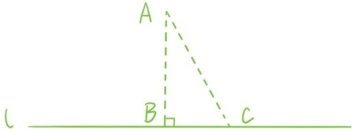
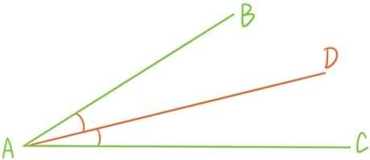
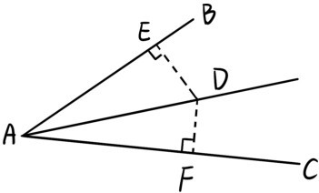
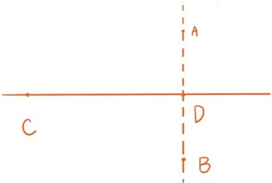
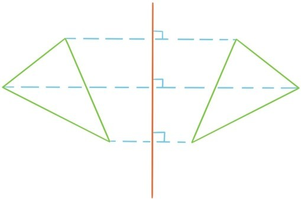

若两条直线AB与CD相交于点O，且在点O处的4个角中有一个是直角，则其余3个角也是直角，则称直线AB与CD垂直，CD是AB的垂线，记作AB⊥CD，称点O是垂线CD的垂足。
定理3.1 同一条直线的两条垂线互相平行。
证明：因为同位角都是直角，根据定理2.3，两垂线平行（证毕）。
定理3.2 过直线AB外一点C，仅有一条直线与AB垂直。
证明：（反证法）若过点C有两条直线与AB垂直，根据定理3.1，这两条垂线是平行的，这与它们都过点C相矛盾（证毕）。
有一个内角为直角的三角形称为直角三角形，直角所对的边称为直角三角形的斜边。
定理3.3 直角三角形的斜边大于直角边。
证明：根据定理2.1，直角三角形的另外两个内角之和等于直角，所以都是锐角。根据定理2.11，斜边大于直角边（证毕）。

过直线l外一点A做垂线与直线l相交于点B，而C是直线l上另一个点，则连结AC后形成一个直角三角形。根据定理3.3，AC>AB。所以AB是点A到直线l的最短距离，称为点A到直线l的距离。

上图中，在∠BAC的内部可以确定一条射线AD，使得∠BAD=∠DAC，称这条射线为∠BAC的角平分线。
定理3.4 ∠BAC角平分线上的点到两边的距离相等。

证明：D为∠BAC的角平分线上的任意一个点，过点D分别做AB与AC垂线，垂足分别E，F。根据假设∠EAD=∠FAD，又根据定理2.1，∠ADE=∠ADF。根据角边角定理，△ADE≌△ADF，所以DE=DF（证毕）。
过线段AB中点的垂线称为线段AB的垂直平分线。
定理3.5 当且仅当点C落在线段AB的垂直平分线上，点C到点A和点B的距离相等。

证明：（⇐）已知C落在线段AB的垂直平分线上。记AB的中点为D。可以假设C与D不重合。这时根据边角边定理，△ACD≌△BCD，所以AC=BC。
（⇒）已知AC=BC。记AB的中点为D。若点C落在直线AB上，则C与D重合。所以可以假设点C不在直线AB上。这时根据边边边定理，△ACD≌△BCD，因此∠ADC=∠BDC，所以CD垂直AB（证毕）。
与垂直平分线相关联的，是关于直线对称的概念。一个平面图形如果绕一条直线旋转180°后，会与另一个平面图形重合，我们就称这两个图形是关于这条直线对称的。如果把直线看成一面镜子，那么关于直线对称的两个图形是互为镜像的。

若直线l是线段AB的垂直平分线，则点A与点B正是关于直线l对称。
提问时间
证明下面3个定理：
定理3.6 若一条直线垂直于两条平行线中的一条，则它也垂直于另一条直线。（提示，在证明垂直之前要先证明它们相交）
定理3.7 三角形3条边的垂直平分线相交于一点。
定理3.8 在△ABC中，若AB=AC，D是BC的中点，则AD既是△ABC的高，又是∠BAC的角平分线。